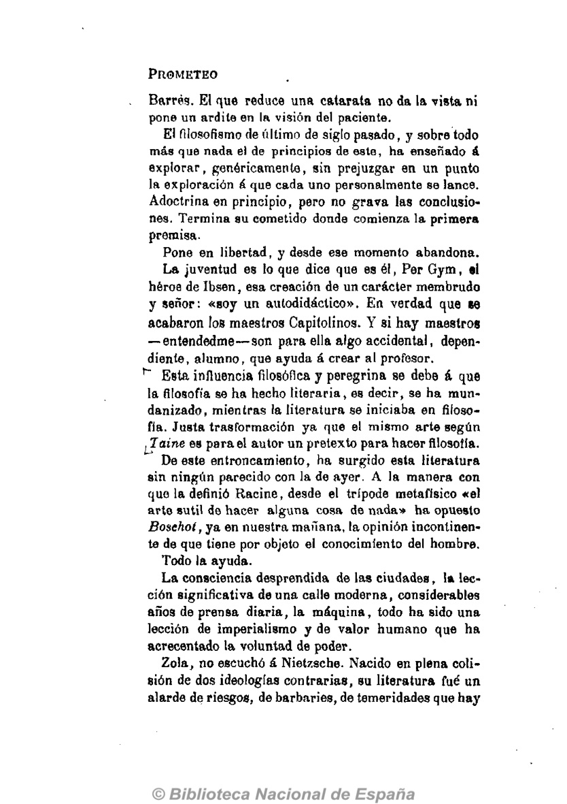

SEÑORAS y señores:
Buenas noches.
No comprendo las causas ocasionales pero ellas me orientan. Obedeciéndolas voy a leer esta noche unas cuartillas hechas sin un objeto más allá de sus plumadas en horas decisivas.
Fui elegido secretario de la sección de literatura gracias al apoyo de unos buenos amigos a los que agradezco la deferencia. Entonces adquise el compromiso de leer un trabajo. Tenía que justificar mi promoción.
Esta es la causa ocasional de esta velada. Su nexo
es cosa aparte. Hechas estas cuartillas confidencialmente,
en la creencia con que lo escribo todo, de que
eran en si mismas principio y fin, hoy me desconcierto
un poco al leérselas al público por lo visto, una entidad
que no comprendo aunque me he dirigido a ella muchas
veces. Nunca he podido tener una idea aproximada de
lo trascendental. Por eso de no haber estado de luto hubiera
aparecido en la tribuna contraviniendo la liturgia
de los actos solemnes, con traje claro, corbata hidrófoba,
y guantes de color, asi como hoy no ha
En el trabajo que voy a leer he tratado de deducir el concepto de la nueva literatura. Sin embargo, está forjado más en vista de lo inédito que de lo hecho hasta hoy, de un inédito que se trasluce ya en la vida, donde diré con toda fiereza;todo es inédito aún, conmovedora e inefablemente inédito.
Me he desapercibido en este estudio de ciertos nombres eminentes. He preferido esa claudicación, a no ver desviarse la cuestión lamentablemente. Además es un caso didaclivo que no he olvidado el de NacubodonoBor quemando a los hermanos Nello porque no quisieron prosternarse ni adorar su busto.
Pero preveo que aun siendo mi iconoclastismo, un iconoclastismo de concepto, alguien reclamará en nombre de los prohombres muertos.
Desde luego afirmo que no es de nadie su representación y menos de los que la acogen. Toda cuestión es de individuo a individuo, de desnudez a desnudez. Sólo la conservaduría analfabeta de ciertas gentes, se ha creido con el derecho a hablar de los hombres históricos, oponiendo a las insurrecciones, como única razón, la razón de sus nombres.
No obstante todos, tanto a estos fracasados qun se guarecen en su representación de los hombres eminontes, como a los otros, les reto a una discusión congostionada. Podrá ser muy dura porque yo voy a ser parcial. La imparcialidad es un principio de inercia, '-jue carece de significado. La imparcialidad sólo puede ser el primer momento de un criterio, decidido a formar la parcialidad.
Y entro en materia.
Ya nada es lo que es por definición, maligno deseo de los escolásticos.

El término general no era más que una cosa inconsistente, � la que ha sustituido un atomismo, hospedaje y envase de la sensatez.
No obstante, los preceptivistas siguen creyendo en la literatura por definici�n. Todos tienen su f�rmula lapidaria. Error. Nosotros creemos con Lebesque �que el arte reducido � f�rmulas se niega �l mismo�. Adem�s somos incapaces—;quiz�s por sobra de capacidad—;de hacer una de esas abstracciones redondeadas y concluyentes que son una detenci�n. Somos trasformistasliterariamente hablando.
El concepto de la nueva literatura no obedece al simplicismo de las preceptivas: es algo mucho m�s complicado, que entrelaza otros muchos conceptos. ^ La condici�n de la literatura es ex�epcionalmente conjuntiva. La actualidad, necesitando hacer una s�ntesis y un hogar, se ha acogido � ella.
El concepto hist�rico de la literatura tenia que decaer. Las cosas vital�simas renuncian � la reducci�n de los prejuicios con toda insolencia. Todo adquiere un valor actual sobre el etimol�gico al desprenderise de todo atavismo.
Asi la nueva literatura se ha apropiado una significaci�n de que estaban despose�das todas las otras. Auna elementos que ninguna otra ha llegado � coleccionar. Se ha acrecido por correlaci�n. No voy � tratar de justificarla. No lo necesita. Es y eso basta, eso la justifica. Stirner ha dicho: �Tu fuerza, tu poderlo es lo que te concede un derecho. Esa misma fuerza y ese poderio son los que conceden todo derecho�.
La primera influencia de la literatura es la vida, esta^ vida de hoy desvelada, corita, contundente como nunca, bajo una inaudita invasi�n de luz. De esta c�pula^ hecha con un primitivismo que ha necesitado de muchos siglos para libertarse, y para ser genuinamente primitivo, proviene su incremento.

Se necesitaba un modo de expresi�n gen�rico, ein da�ar por las sistematizaciones y que pudiera acumular las inquietudes supremas de la vida.
La filosof�a estaba tocada de escolasticismo, universitarismo, especialismo y tantos otros ismos. Entonces se ha recurrido � la literatura.
De aqu� que al estudiarla haya que estudiar el intervencionismo de la vida.
La vida hace ya algunos a�os, la vida imaginable por un temperamento lo menos popular posible, ha llegado � ese grado de serenidad que cauteriza las �ltimas enfermedades. Como ha pasado por todos los ciclos religiosos, y �ltimamente por el ciclo moralista y rid�culo de Comle, de todos esos da�os, ha procedido � lo menos su entereza actual que se ha vacunado en el dolor de sus epidemias, del dolor de verlas reaparecer. La mirada libre de fascinaciones, dragada, ha visto por primera vez—;por primera vez.
Tan sociable, tan f�cil � dejarse asimilar, se hicieron la luz, el paisaje, las cosas y el tiempo, que nunca como ahora, han podido ser dominados tan expeditamente.
Hugo hizo creer al mundo, que �l era el dominador, pero su exaltaci�n fu� una fanfarroner�a. No ten�a esp�ritu do dominador, no cre�a en el hombre. Era un galilco. Era a�n un invertido, del que dice mucho aquello que exclam� ante Napole�n: �El porvenir pertenece � Dios�.
Se equivoc�.
Comienza � pertenecer � los hombres.
En principio les pertenece.
Tantas cosas han confortado � la vida, tanta propaganda laica, tanta asepsia, tanto ruido de tantas tosas, que el hombre ha inducido m�s all� de los t�picos, de los formularios y do los tapiales, una verdad nueva y una gran sorpresa.

La irrupci�n en la vida de Emerson, Stirnor, Nietzsche. Gorki, Haeckel, hace muy poco, ha sido decisiva. Hoy no se puede escribir una p�gina ignorando � Nietzsche. Esta es cuesti�n capital de ignorarlo � no ignorarlo todo.
Al decir Nietzsche, digo todo lo otro y lo esotro. Acojo ese nombre como un s�mbolo. Su influencia filos�fica, audaz, heroica, descarada, no es de �l, es del periodo porque pasamos, sobrecargado de iniciativas, olvidado de sus libros, que son el resultado de su vor�gine. Respondemos m�s de lo que suele creerse, de la modalidad progresiva de nuestro tiempo.
No es Nietzsehe el que ha creado este pante�smo tan equilibrado, tan sereno, tan lujoso de motivos, que ha hecho � la naturaleza af�n nuestra; es nuestra vejez expert�sima de miles de a�os. Es que todo es inteligent�simo en las cosas, hasta el detalle, y basta lo que suscitan para enormizarnos. Nietzsehe no nos ha regalado nada suyo. Ha sido nuestro agente de negocios, nos ha hecho entrar en posesi�n de nosotros mismos. Injustos los sugestionadores le han llamado sugestionador, queriendo invertir el uso de la palabra que les empadrona, por conveniencia propia. No le conocen. Nadie ha exclamado con una lealtad tan demag�gica: �Os ordeno que me perd�is�.
Todos los cr�ticos en cuanto ven una obra de fuego, hablan de Nietzscheanismo. Gustavo Kan en la �Plume� se le ocurri� hace a�os se�alar influencias nietzscheanas—; ya era un t�pico en la critica esa gran suspicacia—; en Barros, pero Barros le contest� de un modo tan concluyente, cuestionando con fechas, poniendo tan � distancia su primir libro sobre el yo, y la primera noticia francesa de Nietzsehe, que Kan rectific� sin salvedades.
La nueva literatura no puede hacer la alegaci�n de
Barres, pero si la de que es tan personal como la de

El filosofismo de �ltimo de siglo pasado, y sobre todo m�s que nada el de principios de este, ha ense�ado � explorar, gen�ricamente, sin prejuzgar en un punto la exploraci�n � que cada uno personalmente se lance. Adoctrina en principio, pero no grava las conclusiones. Termina su cometido donde comienza la primera premisa.
Pone en libertad, y desde ese momento abandona. La juventud es lo que dice que es �l, Per Gym, h�roe de Ibsen, esa creaci�n de un car�cter membrudo y se�or: �soy un autodid�ctico�. En verdad que �e acabaron los maestros Capitolinos. Y si hay maestros —; entendedme—;son para ella algo accidental, dependiente, alumno, que ayuda � crear al profesor.
Esta influencia filos�fica y peregrina se debe � que la filosof�a se ha hecho literaria, es decir, se ha mundanizado, mientras la literatura se iniciaba en filosof�a. Justa trasformaci�n ya que el mismo arte seg�n Taine es para el autor un pretexto para hacer filosof�a.
De este entroncamiento, ha surgido esta literatura sin ning�n parecido con la de ayer. A la manera con que la defini� Racine, desde el tr�pode metafisico �el arto sutil de hacer alguna cosa de nada� ha opuesto Bosehot, ya en nuestra ma�ana, la opini�n incontinente de que tiene por objeto el conocimiento del hombre.
Todo la ayuda.
La consciencia desprendida de las ciudades, la lecci�n significativa de una calle moderna, considerables a�os de prensa diaria, la m�quina, todo ha sido una lecci�n de imperialismo y de valor humano que ha acrecentado la voluntad de poder.
Zola, no escuch� � Nietzsche. Nacido en plena colisi�n
de dos ideolog�as contrarias, su literatura fu� un
alarde de riesgos, de barbaries, de temeridades que hay

La nueva litera corregida de esta intemperancia, aparece con un critetro sincr�tico y sereno completamente in�dito. Recoge toda clase de influencias y as� magnifica y renueva su antiguo significado.
Paul Adam, dando idea de cual es su prurito, h� dicho: �Nos consagramos � una literatura ideis�a as� como nuestros predecesores � una literatura esencial* mente sentimental.�
Tiene un criterio inmune que entroniza la intuici�n. Es la unificaci�n de todos los procedimientos y de todas las ideolog�as.
Es m�s verdadera—;ha dicho Amiel—;que la ciencia porque es sint�tica y percibe desde un principio lo que la combinaci�n de todas las ciencias podr�a una vez, � lo sumo, alcanzar como resultado.
Taine ha dicho �que en vez de definir las ideas las engendra�.
En la creaci�n del concepto de la nueva literatura ha intervenido como en toda diapositiva el clis� negativo.
Ante cierta literatura de anta�o, y aun de hoy, ha adquirido el odio � la frase hecha, � el t�pico, � lo manido, � todo lo que en ellas ha debido caducar.
Asi la sabidur�a de la nueva literatura—;porque es todav�a literatura un poco de transicci�n—;consiste principal y ventajosamente en saber �lo que no ha de hacer�, consciencia creada por todas las ramploner�as de casi todos los libros. De sus lecturas ha sacado una gran aprehensi�n por muchas, much�simas cosas.
Aquella literatura—;como esta de los anacr�nicos—;

En sus p�ginas cence�as, enjutas, sin traspiraci�n, primitivas, espesas, sobrecargadas de peso muerto, llenas de una prosa menuda, sin ventilaci�n, sin gracilidad, sin luz, oliente � habitaci�n cerrrada, y � la humedad de los claustros, no se puede respirar, son sofocintes porque tienen el enrarecimiento de los esquemas, de las abstracciones y de los t�rminos generales.
Pero lo m�s deplorable de esta literatura, lo que m�s insurrecciona contra ella, es que carece de inquietud. Es impasible. Impasible. Es s�lo un pasatiempo —;y no es algo suicida pasar tiempo por pasarle con eso descuido—; un pasatiempo para gentes que no han latido-seg�n ritmos superiores —; Rodin, Meunier, Zouluaga, Carrere, Behetowen, Wal Wittan —; el inconmensurable Wilde, Mallarme, Anatole Rodin, Meunier, Zuloaga, Carrere, Beethoven, Walt whitman —; el inconmensurable Wilde, Mallarme, Anatoleetc., etc.
Nosotros concebimos el minuto de una manera apote�tica y formidable.
Por eso es poco para nosotros lograrle entretener. Necesitamos algo m�s que discrecci�n, mucho m�s; indiscrecci�n.
Todo en ellos es demasiado dial�ctico. Carece de ese influjo y ese imperativo carnal con que llega � nosotros la nueva literatura. Todo en ellos est� galvanizado, todo es teatral y fatuo. Creado con una dureza de convicci�n infame, han hecho imperturbables las l�neas, han hecho una mentira literaria, fan�tica, sin benignidad, llena de moralejas.
Es una literatura sin ideas—;jComprend�ist—;Ley�ndola
se sufre la trepanaci�n. Es todo en ella descripcioniata,
visual; en parte por defecto del estilo que en ella

No hay en esa literatura ni un apasionamiento, ni una blasfemia, ni un equivoco, ni una impertinencia, ni un desm�n. No hay en ella un ESTADO DE CUERPO. Toda ella est� hecha con un reposo, �tico, l�gico, can�nico, insoportable. Como que desaparece el autor
Asi los hombres de esas obras est�n vistos sin mirarles. �Es que esto es posible? �Es que los hombres en quienes nos f�jamos pueden d�rsenos, sin ser concepto intimo, opilogoep�logo, sabor � comentario?
No.
La renunciaci�n que se trasparenta en esas creaciones, es nociva, agresora, y exalta guerreramente como la idea de una operaci�n quir�rjica. Sentimos como si nos disgregaran. A tan lejanas y tan trascendentes cosas pertenece el esp�ritu de esas obras. Nos descentran. Sentimos como si nos exprimieran y vinieran � hurtarnos cosas muy de dentro las cosas muy de fuera.
Lo mismo que con los seres y las cosas sucede con el paisaje. El paisaje de ojos para fuera no existe. Es la cosa m�s subjetiva. Figur�monos un paisaje en un espejo, sin unos ojos que lo observen y un estado de �nimo que lo particularice. No existe. Sencillamente no existe. No puede existir. Es inconcebible de no estar refractado por la sensibilidad seg�n sus caracter�sticas y su acuerdo de momento. Y sin embargo seres absurdos nos lo han dado en esa forma impersonal.
Todo fuera de nuestra consideraci�n personal, es lo invisible, lo intrascendente, lo sibilesco sin secreto, lo abstruso sin escabrosidades, lo que no est� ni m�s all� ni m�s ac� del pensamiento, lo impersonal, lo impensable.
Ir por la signif�caci�n intelectual de la vida � la vida misma es un error.

Por ese camino s�lo se llega � designificarla. Buscarla en nosotros es acertar con la �nica pista.
La �nica verdad que ha dicho Scherer, el parafraseador de la biblia ha sido esta: �La verdad no est� sobre la tierra, la verdad se hace�. Claro que �l dijo esta frase con la malisima intenci�n de hacer una verdad neo-cristiana.
En literatura seg�n su nuevo concepto hay que dar por incidencia muchas otras sensaciones completemente ex�ticas en ese respective. No basta el sistema de la inspiraci�n � flor de piel.
Toda obra ha de ser principalmente biogr�fica y si no lo es, resulta una cosa teratol�gica. Las que est�n hechas en otro concepto, resultan intempestivas, voraces con la voracidad de lo que os descarna espiritualmente para corporizar cosas extra�as.
Los hombres sin que yo me explique como—;por lo gradualmente que se han ido haciendo as� —; sin que yo me explique como, repito, ni con qu� artificios, han inventado medios para hablar fuera de si mismos, para desparramarse y cuando no son ni pueden ser m�s que un t�rmino han hecho de si mismos dos. Raro ha sido el juego pero no por muy raro deja de ser cierto. Los hombres parapetados fuera de s�, han creado esa literatura sin movilidad, sin formato, que amarga leer.
Pero hoy, despu�s de haber hecho supremo el concepto del hombre, haciendo de este modo rotundamente afirmativa la afirmaci�n de vivir, se ha fomentado el ahorro. En verdad hay que no dilapidar, hay necesidad de reservarse, so pena de dispersi�n y de esterilizamiento. Un esterilizamienlo macabro ya que carece de fu�a eternidad en que resarcirse. Eso es lo agostador dde esa literatura que pas�, que es una literatura de descoyuntamientos y desarraigaciones.
La labor de la nueva literatura por esto, ha de ser la
de irnos reconstruyendo, robando � las cosas, descol-

Nos hemos dado cuenta de que el atenderse � no atenderse, el corrobororse � no corroborarse, es una fulminante y desesperada—;fulminante y desesperada—; cuesti�n de ser � no ser.
—;Mientes como un epitafio,—;dice en cierta ocasi�n un personaje de Gautier.
Y es verdad. No pueden mentir m�s los epitafios de los literatos influyentes en la otra literatura.
Pero yo no he venido esta noche � corregir los epitafios. Desde luego he venido � algo m�s que � presentar la parte negativa de un concepto.
Hay muchas cosas m�s importantes.
Una de ella es el estilo.
Frente al estilo achacoso, enrejado, carcelario, abrumado de sombra que nos legaron los otros, frente � su prosa de estame�a, in�spita, opaca, exhibe la nueva un estilo sin carencia alguna, que no se define gramatical y y nemot�cnicamente como el otro estilo, sino que pierde su personalidad aparte, de estilo, con todas sus especialidadesysualti va individualidad para serla vida misma.
El nuevo estilo ha dejado de ser �ptico � corazonado, y sin sedimento religioso ninguno, compromete la complegidad del ser en un orgasmo.
Contra el bizantinismo que ha inspirado siempre al estilo, contra las falsas ideas prosopopeycas de Buffon sobre �l, Bernard Saw, desconcertando de un modo magnifico � los l�gicos que desconocen ese nuevo procedimiento de definir, ha dicho que �EL ESTILO ES TENER QUE DECIR ALGO�.

As� el estilo pierde su valor en ese fuero aparte que hab�a sabido crearse. As� se anula la importancia del modo de decir para desamortiz�ndola, insufl�rsela � lo que se diga.
Bien est� el esp�ritu de reacci�n que anima la genialidad de ��w contra la vida desconceptuada y despose�da de ideas.
�Vorms,_vorms, vormsl
El grito tr�gico de Hamlet, define el gravamen de l� vida. Por doquier palabras, nada m�s que palabras... Palabras que semejan ideas, palabras que por lo muy huecas que son tamborilean con una sonoridad inaudita.., Palabras, cosas de cart�n piedra, sin virilidad, palabras que adulteran las ideas y las suplantan...
Con algunas se ha litigado, pero por miedo � que enardezca demasiado el descubrimiento, no se ha acabado de decir todas las cosas y las inmensidades que son solo palabras. Adem�s todav�a hoy se procesan esos descubrimientos.
Desde luego gen�ricamente puede decirse con Dantec �Estoy completamente convencido de que la manera como hablamos los hombres es defectuosa; resulta de un error.�
Todo �l ha adquirido mayor capacidad, se ha ductilizado desusadamente. �Por qu� no decirlo? Despu�s de todo Gautier echaba � los hombros en cara no haber creado un nuevo vicio. El estilo do la nueva literatura, los ha procreado prolificamonle y si la otra, la anticuada, la acadomicista, ten�a las siete virtudes. —; �Pecata! —; la nueva literatura tiene algunas m�s y un gran surtido de vicios, que se virtualizan inoslimablemente al influjo do lo que se los hace decir.
No olV|idemos la maravillosa incestuosidad de la frase de Saw �EL ESTILO ES TENER QUE DECIR ALGO�
Todos los sustantivos se han adjetivado de manera
radical, los mismos adjetivos—;aumentando asi consi-

El estilo no es ya mera indumentaria, no cobra aquella personalidad de cosa decorativa, se hace vitreo como no lo ha sido nunca, aspirando � serlo m�s; pier- de lo que tenia de aparatoso, y sin embargo nunca m�s complicado que ahora; desconcertante y complicado para el que no lo sabe leer, para el que no le ha derrotado, (se le derrota, asimil�ndole en toda su extensi�n); llega � perderse �l, desaparece, y s�lo ayuda � que se desvele el concepto. Es un desnudo, cuando antes era un atrabiliario encubrimiento.
Asi ha nacido el estilo expresivo. En todo estilo debe haber un juego de fisonom�a, lleno de revelaciones �ntimas. El ideal del estilo est� en alcanzar laexpresi�ndeun Zaeonne, de un Nocelli, � de cualquier otro gran actor.
Ha perdido su color, se ha azogado, cobrando as� una esplendidez ideal.
Con esta prosa azogada, se evita toda la distracci�n concusionadora del estilo antiguo. Estilo al que no niego maestr�a, sin que esto sea sin embargo una afirmaci�n, porque de las cosas �bien dichas� nos ha mandado abominar Relt� en el pr�logo L'arehipel en fleurs, y Amiel—;el santo—;nos ha hablado �de la repugnancia del buen gusto�.
Al estilo no ha de not�rsele. \
El cl�sico buen estilo da una sensaci�n marcadamente estilista, forzada, que se sobrepone y suplabta al concepto. El sustitutivo de las ideas en �l eran las frase8.|,Por eso el desarreglo, la asimetr�a del estilo es una de las ventajas de la nueva literatura.

Asi el concepto es el estilo y rec�procamente el estilo es el concepto.
Al hablar del estilo tendr�a que hablar del lenguaje, de su fundamento filos�fico y de otras triqui�uelas engorrosas. Sin profundizar, descaradamente, despu�s de la cita que he hecho antf^s de Lebesfjue dir� que el lenguaje es una cosa accidental, seg�n lo ha probado el libro de Helena Keller, ciega y sorda, m�s veraz que los de HunibotHumboldt y todos los otros ling�istas.
Todas las f�rmulas han sido invadidas rebeldemente y todos los g�neros literarios, de literarios se han hecho pensadores. Todos los moldes han resultado estrechos despu�s de fecundados, porque proced�an patron�micamente de unos esp�ritus hijos de una fals�a filos�fica extrema. Y han resultado raqu�ticos por lo mismo que en una obra de Paul de Kok—;magn�fica contradicci�n al neo-cristianismo de Rouneau—;les vienen estrechos los cinturones y los corpinos � todas las muchachas de la localidad en que vive el intr�pido Alfonso, educado en la naturaleza, libre de todo aleccionamiento hist�rico, fortalecido por los bosques.
Tambi�n ha hecho necesaria la transformaci�n del estilo, el que ya no es como el otro, efecto de lo usual. Una de las grandes tiran�as de la vida es lo usual, lo usual hace adin�mico al esp�ritu. Lo usual hace patinosa la vida, la ha deformado. Lo usual hab�a enterrado la piedra filosofal. Por lo usual se hab�a olvidado la unidad contrastadora de los bosques.
Hubi�ramos vivido siempre dentro de lo usual, y como la funci�n crea al �rgano � lo inutiliza, hubi�ramos perdido los ojos y nos hubieran crecido las posaderas , si el escepticismo coloc�ndonos fuera de lo usual no hubiera preparado esta entrada reformista en su predio.
La nueva literatura prescinde de lo usual y as� est�
desenterrando el verdadero concepto de la vida, ha15

Lo grandioso, lo �pico, lo oratorio, que � tantos t�picos y maneras dieron lugar, se pierden en el nuevo estilo. Muy pocas adjetivaciones de esas se han conseguido proporcionar y hacer habitables.
Con todo, han llenado una fase farandulera, logom�quica, perorativa y magnifica.
Nosotros nos encontramos desencajados, ateridos, negados, en medio de esos conceptos descomunales, triptol�micos, que daban demasiado importancia � la naturaleza y se desga�itaban en su honor, despersonaliz�ndose. Tienen el enrarecimiento de las alturas, y su temperatura bajo cero. Ya no son las alturas el plaf�n do papel de soda que esperaba romperse con la cabeza para ver no se qu�.
Glaisher nos ha hecho ver que la ascensi�n � m�s de 14.000 metros desorganiza. Cosa que ignoraba el Dios cristiano cuando �l ver edificar la torre Babel � la soberbia generaci�n de Belo—;soberbia en el sentido de m�s quilates de la palabra—;no esper� sabiamente � verla descomponerse al llegar � cierta altura. Su rasero cient�fico ora bien raso. Se puede decir que era de su tiempo. Wright, con toda la sabidur�a que le falt� � �l, ha consolidado Babel con la creaci�n de su dirigible, una Babel sin cimientos pero en principio la Babel so�ada por los Belos y � la que ensancha cada vez m�s la azotea, seg�n es mayor el radio de sus maniobras.
Todas las videncias en que se han debatido nuestros
antepasados, resienten ahora nuestra constituci�n
personal. Parece como si nos volatiliz�ramos, perdien

No hab�an llegado al dominio de lo peque�o, de todo eso � que naturalmente, espec�ficamente, somos adaptabloa, y con lo que hay que compensar lo inconmensurable. Despu�s de tantos versos de almanaque y de tantos paneg�ricos sobre la primavera, nadie como Francis Jammes—;que ha hecho tantas cosas para acercarnos � la naturaleza—;nos ha dado su sensaci�n simplemente.
�Para las bestias la comida de invierno acaba... el d�a aumenta una hora y cincuenta minutos.�
No sab�an tampoco lo mucho que vale la frivolidad. Por eso son teratol�gicas las filosof�as sistem�ticas, porque carecen de frivolidad; no se encuentra en ellas un organillo, ni hay colgada una jaula de canarios, ni hay entre hora y hora un recuerdo de mujer, ni echa nadie un cigarrillo. Nos destierran. Todo es trascendental, carece de veleidades, carece de bibelots y de nuestros peque�os enseres.
Todos se olvidaron del cuotidianismo de la vida.—; iPero como ha sido esto posible?—;El cuotidianismo que es lo supremo y lo que nos invade m�s en total. Por eso nos sugieren sus obras una sensaci�n destartalada, unicorde, desolada, de una vacuidad tan vacua como grande es su ampulosidad.
Asi brotaron esa cabala de obras paol�gicas, in~ farladas, llenas de abcesos y de postemas, ahitas de coraz�n, de cosas honorables—;de las que hoy s�lo quedan en nosotros algunos coxis apenas visibles—; obras siempre hipertr�ficas, llenas de una vida de excepci�n.
Bernard Saw —; que se ha llamado �l mismo superior
� S�kespeareShakespeare —; ha dicho: �Los personajes de s4kespeare
parecen detenidos ante una esfinge inescrutable:
17
Ese resto de silencio, hermelizado, inm�vil, es el que tiende � desglosar la nueva literatura, todo eso que siendo lo esencial sal�a confundido con los comparsas � no tenia papel. Bernard ha formulado bien el gran cargo que puede hac�rseles.
�Todo el resto es silencio.�
En efecto, hay que prescindir de los conflictos de la~l parte de fuera que antes eran toda la inspiraci�n literaria. Trocar la idea de respirar los conceptos por la de traspirarlos.
El hombre nuevo, el �nico hombre si se habla con sensatez, ha hecho bien arrumbando esos peplos de gigante, abandonando tambi�n el viejo juego de andar en zancos. Y asi arrumbando toda la �pica sonor�sima, encastillada,—;producto de un magistral y absurdo instrumento de viento, acoplado � las entra�as,—;la otra �pica, la intima, llena de suscitaciones en su instinto, llena de goller�as, ha reconquistado su ritmo, que soterrado bajo las otras magni�cencias fraudulen- ^ lentas, anest�sicas, viv�a en un desmayo.
La l�rica negativa de las exaltaciones es la que ha hecho m�s da�o � la vida, creando en ella el desequilibrio. Su exaltaci�n en un sentido la ha aterido en el antipoda.
Montaigne, si no hubiera sido tan profesor de Universidad, hubiera representado � la nueva literatura. En ella, particularizando, dentro de esa fuerza c�nica de concepto que ha recogido de la vida y de la �losofia, hay entre otras adquisiciones una important�sima: la de la mujer.
Es un descubrimiento de hoy ma�ana.
La mujer de los otros, mogigatera y circunspecta,
era una cosa convencional, dibujada por el almohadillaje
artificioso de sus virtudes y sus cosas de en visita.
Era la miijer metaf�sica. Amaba con lirismo y � dis-

Por eso aquella literatura tenia el horroroso defecto de ser celibataria y sus concepciones estuvieron da�adas de misogenismo que ha sido la causa de todas las canalladas del derecho, de la moral, de la polic�a y de Jas costumbres. Las manchas del Sol proceden de quo le han mirado los ojos s�rdidos de una humanidad mis�gena, no por falta de D. Juanismos y de malas palabras—; abundan en algunos modelos de aquella literatura—;^ no por falta de mugerismo, sino por su falta de concepci�n, y por no saber imaginar, los valores supremos. En su goce no hubo la abundancia, el hartazgo ultra-filos�fico, que acosecha la nueva concepci�n de ese pecado m�s grande que todas las virtudes.
Aquellas mujeres, �stas, que crean a�n los rezagados, son ocas.
Y no os sorprend�is. Voy � explicar por que son ocas.
En un cuento del Decameron un muchacho que habla vivido en la abstinencia y en el analfabetismo de los mis�genos, visita por primera vez la ciudad de Florencia.
En la visita le acompa�a adlatere su padre, que le ilustra sobre lo quo va viendo, palacios, viejas estatuas, fuentes... A cada sorpresa del muchacho una explicaci�n del padre, hasta que por �n, en una ocasi�n, el muchacho pregunt� de nuevo se�alando � unas mujeres que pasaban.
—;�Y esas qu� son?...
El terrible padre tan inquisidor y tan abstinente, queriendo evitar nuevas preguntas y m�s comentarios, contest�:
—; Son ocas...
As� crey� zanjada la cuesti�n, pero los instintos del

—;�Pues yo quisiera llevarme una oca!
Los otros, lojs academicistas, han aparentado hip�critamente creer en las ocas con metaflcismos, cii"- cunioquios, conceptuosidad, eufermismo y pudibundeces, y han llenado su literatura de ocas y laudos � las ocas. La nueva literatura ha sustituido esa falsedad y ha creado con todos sus determinantes especlf�cos y veraces: la mujer.
Hasta Mendes, Anatole, E�a, y sobre todo hasta Willy y Collet se desconoc�a la mujer, histol�gica, f�sica, capilar, dotada de una psicol�gica arbitrarla de Angora. Zola como primer elemento de reacci�n exager� sus actitudes lesbianas y uso un procedimiento falso de acentuaci�n al hablar de su sexo.
Se la ha dado la importancia que merece, la arrobadora , la extrema, por eso una obra en que ella no figugure es una obra incapaz. Carece de unidad org�nica. De aqu� que la filosof�a tomista, mensurada, sea una cosa repudiable por lo nemot�cnica, por su metod�smo insexuado y por como prescinde en puridad de las inquietudes, y de las indolencias, y de las arbitrariedades de por vida. Era lo menos humana que pod�a ser dado su estilo sin cabrias, sin conscuspiscencias y su desden por las cosas m�s entra�ables. Contra ella, ha aparecido esa literatura f�los��ca, conscientisima, de Nietzsche, Barres, Adam y Gourmont, los fil�sofos menos universitarios.
La nueva literatura, m�s amiga del banco de la*^
plaza p�blica, � de la avenida � de los boulevares (1)
(1) Y esto del banco no significa que su posici�n ante la
vida sea ext�tica, cree, lo que hace decir Rouseau � M. de
Wolmar.� Siento quo no se ve nada cuando se contenta uno
con mirar, y que es necesario agitarse para apreciar que se
agitan los hombres. Yo me hice actor en la vida para poder
ser espectador.�

Por primera voz haciendo enmudecer, � los hombres reposados, conservadores y a�n � los m�s subversivos que se dedican � esa especialidad dice olla las palabras decisivas. Nadie como Anatole, como Gourmont, como Heutman, como Mirbeau, como Saw, ha planteado ' ' 'los problemas sociales. Han dicho la primera y la �ltima palabra.
La nueva literatura no puede olvidar loa absurdos puesto que por primera vez no es absurda. Tiene por naturaleza la repugnancia de todas las barbaries.
Una literatura burguesa, conservadora, sin contagiar por todas las subversiones y por todos los grandes anhelos, impasible ante la colisi�n silenciosa de todas estas cosas, impasible ante la absorci�n con que denigran la vida, no es literatura,
Esto no quiere decir que emplee y tenga f� en todos esos t�rminos pseudo-cient�ficos, conque se plantea la cuesti�n y que son los que la han perjudicado, y por lo que se reprueba en las c�tedras de derecho. No.
Su papel es demostrar ante la naturaleza que est� cerciorada, acosadoramente, vagorosamente cerciorada de muchas cosas de las que se ha cerciorado ante ella, con palabras sencillas y extremas que por primera vez no forman, ni tienden � formar una escuela ni un partido ni una sistematizaci�n. No cree en un derecho que oponer ala arbitrariedad, esto serla inocente, cree por el contrario en una arbitrariedad que oponer � la arbitrariedad en la que funda un nuevo sistema de educaci�n.
La nueva literatura no puede olvidar que existe la
c�rcel, terribles trabajos forzados que no parecen forzados
sino ciudadanos, gentes que hambrean , y diria
con indignaci�n que no puede olvidar que existen otras

La nueva literatura no lo olvida. S�lo el bizantinismo pijotero de algunos arist�cratas literarios se permite ciertas desfachateces, desfachadas no en relaci�n con los principios puros, sino en relaci�n coa el derecho � la vida de los otros que debieron ensayar en ellos su antropofagia.
El concepto naturista, at�mico, fulmine�, emocio-'^ nal, concluyente, supremo, que puede llegar � formar la literatura de la cuesti�n social, es todo lo que la hace falta. Menester es que nos dejen ir � ellos y qu�j sepan que vamos � compensar su fe, con otra fe. No que les vamos � dejar hu�rfanos, necesitados como est�n de compensaci�n. Eso seria patibulario.
De todas estas caracter�sticas, de esa reconcentraci�n'—; mejor dicho, para usar una frase predilecta de Taine—;de esa �convergencia de efectos� con que ae ha hecho m�s capaz la nueva literatura, ins�litamente plenaria, dotada de una conciencia integral, deduce uno no la BELLEZA, que es un t�rmino vacuo como el de los Dioses, sino una sensaci�n biol�gica, org�nica —;especificando: —; histol�gica, sensaci�n de confort, de poder, de inquietud, de mamiferismo, tor�cica, t�ctil.
Y esta es su originalidad y su supremac�a. La filosof�a siempre sistematizadora, sin mundanidad, tiene el defecto de no dar esa sensaci�n personal, organizada , de la nueva literatura, que es toda una percusi�n de la naturaleza.
La nueva literatura es en s�ntesis lo que dice Lange
que es el ser: un centro especifico de fuerzas, aunque
seria preferible llamarlo un c�mputo de fuerzas. Responde
al concepto intimo y funcional del ser. Todos
sus imperativos son carnales y todas sus cosas establecen
.una sensata y acuciadora correspondencia or-

Asi prescindiendo de las preocupaciones desquiciadas de las otras literaturas, de sus desmesuramiento, se ha atrevido � parecer arbitrar�a para ser consecuente y humana. En ella el hombre trabaja en vista de s� mismo. Ha compensado � Dios � su manera, inefablemente, lia aprendido el valor del barro.
Por esto, para ser completamente org�nica, en el sentido circunstancial de la palabra—;que es � la vez absoluto—;no debe descuidar la actualidad, ni el espacio, ni el lugar.
�Oh! |La actualidad!
El siglo perjudic� al minuto. Ten�a desconcertada la vida. M�s la afirmaci�n personal ha implantado una nueva perioricidad. De ella se ha deducido que hay que vivirlo todo con un af�n supremo, sin despilfarro y como si ello fuera lo �nico sin soluci�n de continuidad.
Lo actual coadyuva � la afirmaci�n de nuestra vida, afirma su Hnitud, y de eso s�lo estamos necesitados.
Lo actual evita que no seamos de ning�n momento, queri�ndolo ser de todos, ignorantes de que en ese todo quim�rico no habr� nada que nos afirme, que nos origine en este sentido de degustaci�n �ntima, org�nica, concuspiscente, en que entendemos la afirmaci�n personal.
Somos el d�a tantos, de tal mes, de tal a�o, hasta el d�a tantos de tal mes, de tal otro a�o. Nada m�s, en ^absoluto, nada m�s.
Ha de ser tan actual la literatura que hasta el modo
de editar ha de estar conjugado en presente. Y si se
escucha un piano en sus p�ginas no ha de ser un piano
de marca demode, sino de la m�s actual. La conviene
hablar de las �ltimas modificaciones de la calle y de!
alumbrado, y si pasa una mujer entre las regletas hay

Todo lo que no sea actual es desconcertante y no es tan sabrosamente asimilable como lo actual. Somos de nuestro momento y seria mentir nuestra naturaleza y aterir�a y resabiarla, el creer otra cosa.
Hay que combatir siniestramente el esp�ritu de anticuario que hay a�n en el fondo de los hombres y que enrancia y desorganiza tanto la vida.
Todo lo que no es actual � no se condicione por lo actual carece de justificaci�n. El espacio y el lugar deben obedecer � esa misma perioricidad. deben estar dentro de ella, con su misma certeza, en detalles ultim�tums y variaciones. Somos de nuestra calle y de nuestra casa. Asi, ya sea madrile�o, vallisoletano, london�ense � parisino, toda vida para ser org�nica, ha de estar sita de un modo categ�rico. De tal manera que las calles han de ser ver�dicas, llevar su propio nombre, y hasta si en ellas se ve la mano indicadora del zapatero de portal no valdr� suprimirla. Todo lo nuestro debe tener un car�cter de madrile�ismo.
Estas dos aseveraciones hechas con todo fanatismo—; por que me siento abotargado, por ese raro apelotonamiento de fuerzas que debi� sentir L�tero—;son tan horrorosas que de ellas har�n una horca para m� los discretos.
Y todas estas influencias no son est�riles, tienen un cometido important�simo: la creaci�n del car�cter.
La otra literatura tuvo por fln el entretenimiento. No puede haber de cometido � cometido, entre la vieja y la nueva literatura, mayor superioridad.
El car�cter es el todo, en la vida. Es una acepci�n del hombre hospedada hasta en los tu�tanos.
En el hombre es una cuesti�n capital la de tener �
no tener car�cter. Sin car�cter, de nada le sirve tener

Crea esta alternativa desnivelad�s�ma.
Dispone del mundo, lo hace propiedad individual todo �l, � no dispone y entonces, como si limosneara.
Es el personalismo. El car�cter glosa y desglosa las cosas en e! sentido privado, org�nico, que llena � no llena una vida, la hace densa 6 paup�rrima, la extralimita � la enchiquera.
La literatura prepara esta ecuanimidad. Consigue que no tomemos un tranv�a con ridicula precipitaci�n, nos pone � distancia de un sombrero color caf� , evita que nos perdamos en el coreo de las muchedumbres, en la risa de todos los chistes � en el dolor de todos los dolores. �sirve para hacer de nosotros otra cosa que culotadores de pipas, coleccionadores de fototipias, hombres de visita � hombres transcendentales. O si por un acaso aceptamos esas encarnaciones para demostrarnos que estamos al cabo de todo, lo seremos todo dentro de nuestro mascar�n. Ayuda al bien vivir y al bien morir. Evita que seamos seres en suspenso bajo una preocupaci�n peque�a, un t�pico, la oficina, el suceso del d�a, la recepci�n acad�mica, la pol�tica, el moralismo, la honorabilidad.
Y el d�a que nos aprovincianemos fomentar� en nosotros la grandeza de �nimo y sabr� tirar todos los meridianos y trabajar la esfera armilar alrededor de nuestro BELCHITE.

Fomentara en nosotros una delicada adaptaci�n al tabaco, � los paseos � solas � con e� veterinario y siguiremos con toda consciencia, y con toda atenci�n, palade�ndolo mucho, el discurso de nuestra vida. Nos permitir� quedar fuera de todas las cosas peque�as y de todas las cosas usuales; mejor dicho, dejarlas dentro de nosotros, acogi�ndolas en su justiprecio, en vez de entrar dentro de ellas, anul�ndose chafando nuestra vida como los sin-car�cter, justipreciados por ellas.
En la int^ridad de los caracteres fuertes es innega-" ble que hay una plenitud literaria.
En Napole�n, en Garibaldi, en Carlota Corday, en Lemoine—;el creador del brillante—;ha habido una plenitud literaria. Sobre todo en Napole�n.
Y entendamos con toda malicia que creado el car�cter todo se ha creado furtivamente—;furtivamente he dicho.
A la gente hay que imponerlas esta maquinaci�n Este es el gran cometido de la literatura. Las masas, las muchedumbres son una cosa muerta, sin car�cter considerada en total, pero tienen la admirable condici�n de llevar en si el feto del car�cter.
La literatura ha de afanarse en esa OPERACI�N CES�REA. Arranquemos � los muertos ese algo vital que no est� muerto como ellos y que palpita en sus entra�as.
No obstante el gran papel que viene � cumplir la nueva literatura encuentra gran n�mero de obst�culos.
Bien es verdad que el esp�ritu de esta �poca es de imposici�n, esp�ritu cremat�stico; pero nada, como su formaci�n literaria dar�a m�s incremento � su vigor.
Su m�s nociva oposici�n es la de los esp�ritus de anticuarios que atiborrantes de intereses creados han visto una competencia y han creado un dicterio que oponerla: �decadente�.
La decadencia seg�n ellos, la forman todos esos elementos formidables de la nueva literatura.

La decadencia es una de las palabras m�s ambiguas que existen. Verdad es, que est� hecha con la peor intenci�n.
Discut�mosla en lo que quiere significar.
La naturaleza nos compuso para la imposici�n, para la lucha por la vida, nos hizo con su ceguera de siempre, es decir, constituy� el protoplasma, hizo � la m�nada, � la m�nera, cosas sencill�simas, propensas � la combinaci�n, hizo recto, concluyente, nuestro destino como el de �rbol, el del insecto, el del infusorio. Por eso hay tantas cosas fatales. Las experiencias de Pap�s tuvieron su limite. Aquel en que no tuvo nada que recomerse.
Pero dentro de nosotros, de esa fatalidad introcable y adusta encontramos una inmanencia que aprovechar. Una pepita dulce que pod�amos DEGUSTARNOS. Claro que no contraven�a en nada sus leyes naturales. No se hubieran dejado contravenir. Dentro de las layes qu�micas y f�sicas � que est�bamos sometidos encontramos libertad de que disponer.
Era un intersticio � trav�s de las leyes, un claro microsc�pico, sitiado por todas las fatalidades. Sitiado perentor�simamente. Pod�amos jugar, est� fu� nuestro descubrimiento. Nos pareci� una cosa inmensa. Para la naturaleza segu�a siendo una cosa sin importancia, se dejaron de construir cosas piramidales, cosas hist�ricas. Entonces el flirteo, el epicuerismo, el vicio prudencial —;sobre esto del vicio prudencial tendr�a que hablar mucho—;la filosof�a del bon- vivant, del confort otras y otras florituras � confituras capital�simas.
La naturaleza no pens� en esta risue�a escol�stica, que es en s� principio y fin. Pero nosotros sabiamente la hemos creado. Las buenas hetairas han adivinado todo esto y hechas por la naturaleza como mera semilla, se han comido el semillar como una gran cosa sabrosa y afrodisiaca.

Si yo tuviera que hacer un s�mbolo de la decadencia hablarla de las medias negras caladas y de c�mo han exaltado y hecho pluscuamperfecta la carne de mujer.
La naturaleza la cre� sin medias, la naturaleza est� desinteresada de todo lo que no sea universal � monis� ta, en raz�n de sus leyes. Por esto tambi�n no pens� nunca en el Weefstea, en el jam�n en dulce, ni en el foie-gras.
La decandencia en vista de todo esto es una palabra que pone al hombre la expropiaci�n en atenci�n � si mismo y � que es mortal.
No ha habido liberalidad m�s sensata. �Seamos de la decadencia! Baste saber que es encantadora.—; Muramos de una hartazgo de decadencia y habremos traspuesto todo el m�s all� y el allende del m�s all�.
�Seamos de la decadencia!
�Pero—;deteni�ndome en mi hilaridad—;es que hay derecho � decir esa palabra! �Tiene raz�n de ser!
Solo la naturaleza pudo haberla articulado. Y el cosmos solo es en ciertas ocasiones onomatop�yco. Nunca elocuente.
Los hombres que la han creado han suplantado la naturaleza. Ridicula suplantaci�n que ha hecho la hormiga de la esflnge, dot�ndola de sus malos humores , de sus estrechas virtudes, de sus falsas elucubraciones y entelequias.
�Seamos de la decadencia!
Cualquier gran trastorno que en la naturaleza se verificara, su fracaso entero no la merecer� un lamento, ni una r�plica, ni aun un encogimiento de hombros, porque siempre saldr� ileso el principio general de la trasformaci�n de la materia y de la energ�a.
De aqu� que nada importen nuestros peque�os trastornos
en el terreno privado. Nuestra pepita—;s�mbolo
de lo m�s �ntimo en nosotros—;nos ha servido para

�Seamos de la decadencia!
Ya veis la impropiedad de ese apostrofe que se opone � la nueva literatura. S�lo explican su insensatez unas palabras que dijo no se qui�n: �Para un cl�sico que admite la unidad de perfecci�n y que no reconoce m�s que una f�rmula de belleza, cambiar, trasformarse, es necesariamente degenerar.�
Tambi�n se opone � la nueva literatura un gran recelo que la inculpa de falta de probidad,
Se la ha acusado de artificio.
Se cita como � juglares � Nietzsche, Wagner, Baudelaire... Este alegato se destruye citando la parte indiscutiblemente sincera de su vida, su correspondencia, esa correspondencia de los hombres extraordinarios que se cree con derecho � violar el porvenir...
En Nietzsche, las cartas � sus amigos de Sils Mar�a, en una de las que liega � decir �Las forestas v�rgenes y la felicidad se quedan para los que no tienen tantas filosof�as sobre las conciencia�, Wagner sufre encerrado siempre en �el dolor de sus exploraciones�, como �l dice en las cartas que dirig�a � sus amigos de la Verte Colline y Baudelaire, vive atormentado v�ctima de su misi�n superior, y como prueba de esa gran honradez e^t�n las cartas � Saint Beuve, en que se queja tambi�n de su genio tan dif�cil y tan doloroso.
Pero poco importa que se demuestre la villan�a de esas diatribas. La literatura personal, verdaderamente personal, est� obligada � vivir residenciada en s� misma. Tanto por el p�blico como por sus arrendatarios.
�Para el p�blico—;ha dicho Osear Wilde—;todo en

El burgu�s tendr�a que hacer un esfuerzo mayor � sus esfuerzos usuales: aglomerar m�s sangre en el cerebro, y esto es imposible porque la tiene toda agolpada en el est�mago> donde no le da abasto.
En cuanto � los arrrendatarios se pagan del p�blico, y la revista y la prensa se niegan � toda obra verdaderamente personal. Sus intelectuales de n�mina hablan como alumnos de filosof�a y letras � como doctores, casi todo es ortodoxo, pues hasta se ha creado un revolucionarismo ortodoxo. Desde luego todo es discreto. Si alguna vez figura un literato personal es cuando deja de hacer literatura insobornablemente personal y se hace discreto.
Por esto, en vista de este apartamiento, hay derecho � decir que el gran latifundio del siglo XX—;el b�rbaro sobre toda barbarie, y el descomunal sobre todo descomedimiento—;SON LOS ROTATIVOS. Un latifundio incomparable con todos los que se han ido desentravando.
Pero esto no importa, aunque la literatura personal est� confinada—;en Espa�a, se entiende,—;no debe olvidar que Gouyot ha dicho con una frase en que habr�a que corregir las palabras gruesas: �Lo que es bello y grando se basta � s� mismo�
Esto sin atender � que no son apetecibles los adjetivos p�blicos, pues las carteleras—;abigarradas de color, cuotidianamente renovados sus titulares—;los anuncios de espec�ficos y los rotativos, han achatado y hecho sordas todas sus preeminencias.
Sin embargo, exagerando todos los peligros, ha
aparecido la falsificaci�n de la literatura personal. Debido
� la expectaci�n del p�blico, aprovechando la

Este es el peligro de la nueva literatura, su competencia. La habilidad. No va todo lo all� que ella, ni tiene todo su albedrlo. Es un aborto industrial que ha aprovechado la revoluci�n art�stica, coincidiendo su aparici�n con el de las pianolas mec�nicas.
Un dramaturgo tenemos que es el caso cl�nico. Ha creado la rebeld�a bonita prendida siempre de una gracia � de una temperancia. Ha hecho de lo formidable una cosa sacarinosa.
Yo he visto en una tienda de muebles un trabajo de cer�mica exquisito, exquisito en la acepci�n filisteade la palabra. Era una ni�a menesterosa, remendada, de las que han hambre y sed,de las angulosas, pero en el modelado estaba tan buida, tan cuidadosamente hecha, se hab�a mentido tanto la agresividad de lo real, que daba gusto verla aun siendo una miserable. El orfebre hab�a involucrado su concepto.
Dos se�oras que al pasar se miraron de reojo en el contraluz de la luna del escaparate, la sorprendieron.
Mir�ndola, tan suavemente conmovedora—;suavemente y no terriblemente, cruentamente, blasfemamente—; se las ocurri� decir:
—;�Qu� bonita har�a en la sala!
Ese es el arte industrial y claudicante, sin agresividad, sin entereza, que aprovecha la modernidad y los gustos del burgu�s, un poco de su �poca.
A Nietzsche se le ocurri� una blasfemia y un rugido despotricante contra estas falsificaciones: ��Ay! Muchas veces ha llegado � hastiarme el ingenio cuando vela que tambi�n la canalla era ingeniosa.�
Y voy � ir terminando.
De todo lo dicho se desprende que la nueva literatura
no tiene un com�n denominador. Se absuelve
de ese prurito disciplinante, escol�stico. Ha acogido

Exaltado su concepto, informado por todos los conceptos, hay en ella una veracidad extrema.
Ha hecho suya, en un nuevo aspecto, la doctrina monista.
Su concepci�n es la misma del monismo, por eso yo llamo � mi doctrinarismo, � mi modo de concebir la literatura �Monismo literario�.
La nueva literatura, por esa exaltaci�n que la conviene, no debe olvidar que hay que escribir siempre como haciendo TESTAMENTO, definitivamente, y al poner en limpio lo escri�o como haciendo en las corree dones todos los CODICILIOS posibles.
No debe olvidar tampoco el incremento de aquel estrambote de Mallarme: �El mundo ha sido creado para tener por resultado un hermoso libro�. Ese libro ser� la par�frasis de todos los libros, venidos y por venir. Pensad en �l al numerar la primera cuartilla de todas vuestras cosas.
Con ese coraje de concepto, 6in responsabilidades acad�micas que temer, practic�ndola �no conformidad�, primera virtud del hombre seg�n Emerson en la duda de todos los procedimientos, escribiendo sin pensar en la posteridad, la nueva literatura tiende � ser lu menos literaria posible en la acepci�n p�blica � hist�rica, incapaz y apocada, de esa palabra. Estamos en pleno pante�smo que sobre el de anta�o tiene la nota inconmensurable de haber pasado, de HABER TENIDO EL CRISTIANISMO.
Estamos en plena revoluci�n pintoresca, ya preconizada por Saint-Beuve.
Asi comenzamos � asistir como novicios al descubrimiento
de la nueva literatura. La nueva literatura

Ha dejado de ser una expiaciones. Sa ha aplacado.
Y estoy en el punto pen�ltimo.
Es el colof�n de mi profesi�n de fe. Yo lo espero todo de la nueva literatura, porque en principio reniega de todos los sedentarismos, hasta de los libertarios cuando se detienen en su insurrecci�n. Sabe muy bien el apotegma de Gourmont: �La cic�lisact�n no es m�s que una serie de insurrecciones.�
CUMPLAMOS LAS NUESTRAS.
He dicho.
Tableau.